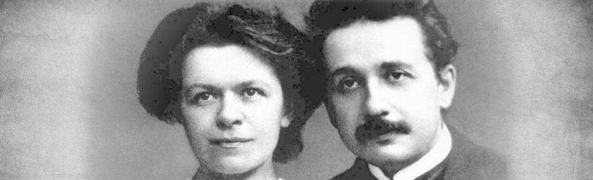

Садржај:
Универзитетска и професорска каријера
Специјална теорија релативности
Алберт Ајнштајн, син Германа и Паулине (Кох) Ајнштајн, рођен је 14. марта 1879. године у 11 часова и 30 минута, у граду Улм у области Виртемберг, Немачко царство, за које ће бити везан током читавог живота. Сведочанство о његовом рођењу се чува у архиву матичара града Улма. Био је јевреј, а име је добио у част деде Абрахама.
1944. године, за време другог светског рата, кућа у којој је Алберт одрастао порушена је до темеља. Две године након његовог рођења, родила се и његова сестра Марија – Маја, за коју је био веома везан. Проговорио је са три године. До своје седме године, имао је изненадне изливе емоција. С обзиром да му је мајка била пијанисткиња, Алберт је научио да свира виолину, а убрзо је савладао и клавир. Већ у основној школи, испољио је склоности ка математици. У том периоду, био је мирно дете које и није нарочито волело да се дружи са вршњацима. За њега, прво ''чудо'' је било када му је отац показао компас, баш у тим раним годинама, што је имало велики утицај на његове касније проналаске.


Са породицом се преселио у Минхен, где 1888. године, креће у гимназију Луитполда, коју је похађао до 15 – те године. Био је истакнут у латинском и математици, док је гимнастику и спорт много мање волео. Био је особењак. Решавао је математичке задатке које му је задавао деда Јакоб, а посебно је волео да се дружи са студентом Максом Талмудом, који је често боравио у дому Ајнштајнових. Он је Алберта упознавао са популарним научним књигама, а касније му је донео и радове Канта. Знали су сатима да разговарају о науци и филозофији. У дванаестој години, доживео је ''друго чудо'', када је добио Еуклидову геометрију, коју је он називао ''библијом геометрије''.
Након неког времена, његова породица се сели у Милано па затим у Павију, док је Алберт остао у гимназијалској клупи. Убрзо, узима налаз од породичног лекара о нервној исцрпљености, напушта школу и одлази код родитеља у Павију. Лепоте Италије су на њега утицале позитивно, где он проналази хармонију и склад.
Октобра 1895. године, успешно је положио испите Политехнику – му у Цириху, из математике, биологије, нацртне геометрије, хемије, физике, историје, немачког, француског, цртања и слободни састав. Уписује се 1896. године, након што је завршио испит зрелости у Аарауу, где се формира у младу личност, свесну себе и својих квалитета. Те четири године студентског живота (1896 – 1900) живео је скромно. Тамо стиче разна познанста, са Марселом Гросманом, Мишелом Анђело Бесо, као и фамилијом историчара Алфреда Штерна. Највише времена, ипак је проводио у раду на експериментима у физичкој лабораторији. Једном приликом, професор – руководилац експеримената Хенрих Фридрих Вебер упутио му је следеће речи: ''Ви сте способан млад човек Ајнштајне, чак веома способни, али Ви имате један велики недостатак – Вама не треба ништа рећи'' (Бајић, 1998: 46).
На завршном испиту, добио је следеће оцене: теоријска физика – 5, експериментална физика и астрономија – 5, теорија функције – 5, термодинамика – 4,5.
И тако је 1900. године дипломирао са још пар колега, док само један студент који је био са њима није положио испит; то је била Милева Марић, Албертова будућа супруга. Након дипломирања, био је очајан јер дуго није могао да пронађе посао, као и због професора Вебера, ком до краја живота није могао да опрости што му није уделио место асистента.
У децембру 1900. године, он завршава свој први рад о међумолекуларним силама и шаље га у ''Annalen der Physik'' (Einstein A.,1900.). Фебруара идуће године, добија држављанство Швајцарске, којој се увек дивио. Затим проналази привремени посао као учитељ у једној средњој школи, којим је био веома задовољан јер му је поред наставе, увек остајало довољно енергије и да се бави науком.
После много труда, падова и успеха, на сугестију пријатеља Гросмана, 1902. године, постављен је на место техничког експерта III степена у Патентном Бироу. Алберт и Милева су се венчали 1903. године, а већ следеће године родио им се син Ханс. Веома напорно ради у Бироу, усресређен је на нова открића и са огромном енергијом се носи са науком, да би 1903. и 1904. године публиковао радове по основним елементима статистичке механике.
Алберт Ајнштајн и Милева Марић
И коначно долази 1905. година, у којој је млади Алберт за кратко време постигао незамисливе успехе у науци, које нико до тада а ни касније није успео достићи. Проширио је хоризонте физике и надмашио самог себе. Те 1905. године, објављује следеће радове из теоријске физике: